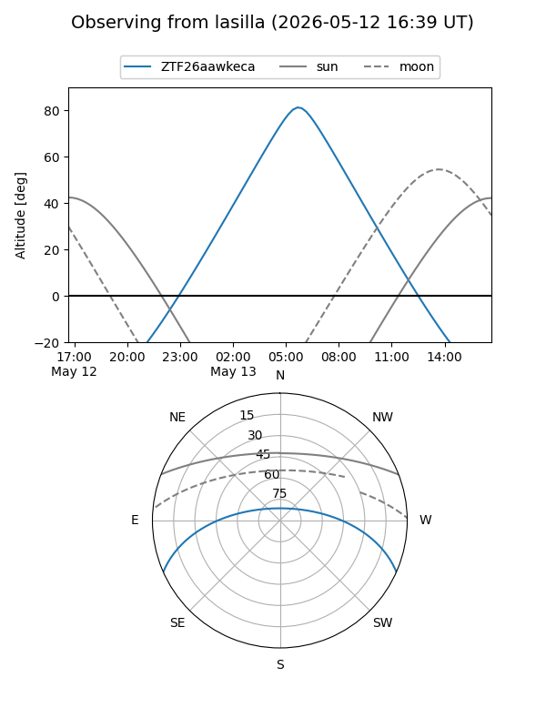
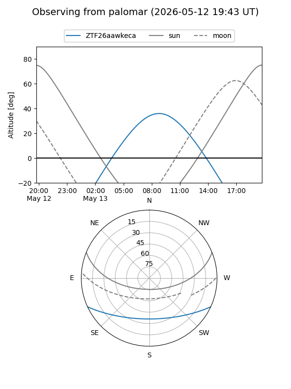

ZTF26aawkeca
Target ZTF26aawkeca at 2026-05-13 09:05
Aliases and brokers:
FINK: link
Lasair: link
ALeRCE: link
alt names
ZTF26aawkeca (ztf,fink_ztf)
Coordinates:
equatorial (ra, dec) = 245.5452,-20.56310
equatorial (HMS+DMS) = 16:22:10.84,-20:33:47.14
galactic (l, b) = (355.4315,+20.17975)
Flags:
Photometry:
last ztfg=19.12
1 ztfg detections
Lightcurve
Visibility


Additional plots